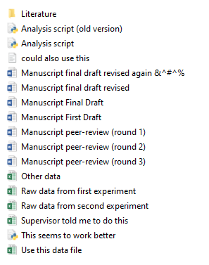
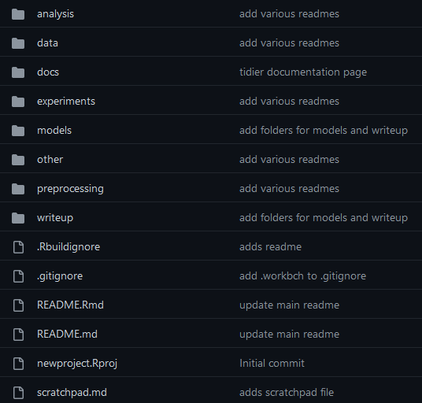
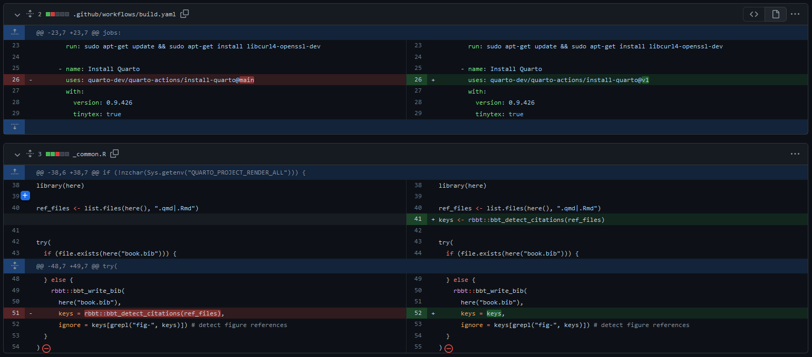
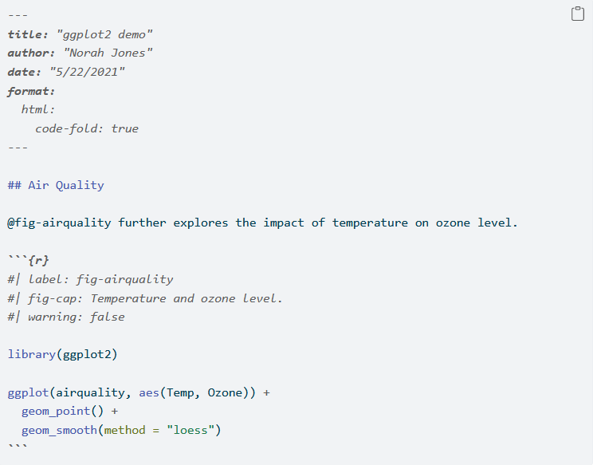
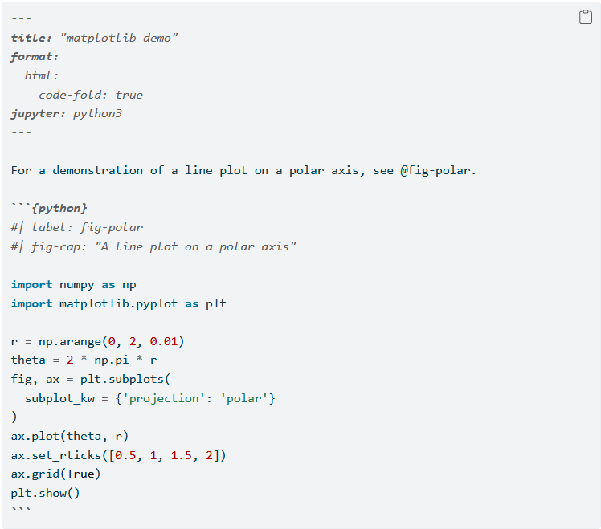
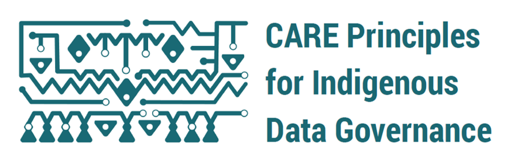

Data Management Plan Training
3me PhD students - Part 1
Me
Overview
Why are you here?
Support with Research Data Management Policy requirements:
Attend training in Research Data Management ✔️
Data management plan (DMP)
- To be written within the first 12 months
- approval during go/no-go meeting
Data/code archiving requirement
- Research data and code supporting the PhD thesis must be uploaded to a repository before graduation
No, seriously… why?
Workflow efficiency!
Early organisation and proper documentation of project and data
Prevent data loss… you never know

Who am I to tell you what to do?
Interim Data Steward at 3mE
PhD student, 5th year…ish
Did research data management training for my own PhD
Who am I to tell you what to do?
Interim Data Steward at 3mE
PhD student, 5th year…ish
Did not take research data management training for my own PhD
Who am I to tell you what to do?
Interim Data Steward at 3mE
PhD student, 5th year…ish
Did not take research data management training for my own PhD
Did regret not doing the training… Learned the importance of RDM the hard way…
Training schedule
Part 1
- Intro to research data management
- policy requirements
- processing personal data
- Hands-on experience with DMP(online)
Part 2
- Discussing with supervisor (and data steward) and completing the DMP
Part 3
- Summary of part 1
- Re-evaluation of DMPs
- Archiving and publishing data and code
Training outcomes
- The importance of proper data
- management
- storage
- documentation
- Practical implementation of a DMP
- using DMPonline
- Personal data considerations
Data Management Plan
What?
Document describing what will happen with…
- code
- data
…during the project, including
It also determines what happens to code/data after the project
- if it will be publicly available
- how long data will be stored for future (re)use
- who will have access to the data in the long term
Research data
…. data in the form of facts, observations, images, computer program results, recordings, measurements or experiences on which an argument, theory, test or hypothesis, or other research output is based. It relates to data generated, collected, or used, during research projects, and in some cases may include the research output itself. Data may be numerical, descriptive, visual or tactile. It may be raw, cleaned or processed, and may be held in any format or media. Research data, in many disciplines, may by necessity include the software, algorithm, model and/or parameters, used to arrive at the research outcome, in addition to the raw data that the software, algorithm or model is applied to.
The plan!
DMPonline
DMPonline is an online platform for creating a DMP
You can log in with your NetID to the TU Delft DMPonline
Here, you can:
- Write and update your plan during research
- Select from multiple templates (TU Delft, NWO, etc.)
- Share your plan with collaborators/supervisor
- Request feedback from your faculty data steward
- See other plans shared by researchers at TU Delft
For more instructions, see here.
During the project
This illustration is created by Scriberia with The Turing Way community.
Used under a CC-BY 4.0 licence. DOI: 10.5281/zenodo.3332807
Data storage
Storage options at TU Delft
https://tudelft.topdesk.net/ > ICT services > IT for Researchers
- TU Delft ICT Network drives
- Personal Drive (H:)
- Staff Group Data (M:)
- Project Drive (U:)
- Cloud Storage
- SurfDrive
- TU Delft OneDrive
TU Delft ICT Network drives
These are accessible from the TU Delft network (e.g. via Windows File Explorer)
| Location | Storage | Access | Suitable for confidential data? |
|---|---|---|---|
| Personal Drive (H:) | 8 GB | Just you | Yes (but not research data) |
| Staff Group Data (M:) | 50 GB | Department | No |
| Project Data (U:) | 5+ TB | Managed by drive owner (project PI) | Yes |
Need more computing power?
Cloud drives
| Location | Storage | Access | Suitable for confidential data? |
|---|---|---|---|
| SURFDrive | 500 GB | Just you (can share files/folders) | No |
| Microsoft OneDrive | 1 TB | Just you (can share files/folders) | No |
Project Drive storage
Recommended for project data
TU Delft ICT Network Drive
- reugular backups
- standard: 14 days retention
- high: 14 days + 53 weeks with redundancy (upon request)
Should be managed by project leader
- access can be given to internal and external users
Pros:
- Data is accessible when researcher leaves lab
- Up to 5TB storage (more upon reasonable request)
- Can request for multiple projects
Cloud storage
- 500 GB storage for TU Delft researchers
- 30 days backup
- local desktop application, synchronised with cloud
- Flexible sharing possible with external collaborators
- 1 TB storage for TU Delft researchers
- 30 days backup
- local desktop application, synchronised with cloud
- Flexible sharing possible with external collaborators
- Automatic version control
Other cloud solutions
- Dropbox, Google Drive, etc.
- Just don’t…
Pros-cons
TU Delft ICT Network drives
- ✔️ Regular backups (3-2-1 rule)
- ✔️ Secure storage
- ✔️ High volume storage (5TB+)
- ❌ Needs internet connection (and EduVPN)
- ❌ Can’t share single files/folders (all or nothing)
Cloud drives
- ✔️ Synchronisation with local device
- ✔️ Version controlled
- ✔️ Advanced sharing
-
❌ Not secure, not appropriate for sensitive/personal data
-
❌ Not compliant with 3-2-1 backup
- ❌ Account deleted shortly after researcher leaves
Backups
3-2-1 backup rule-of-thumb
3 copies of the data (1 primary, 2 backups)
2 different storage media (e.g. external hard drive and laptop)
1 copy stored offsite (different geographical location)
Data sharing
- up to 1 TB
- End-to-end encryption up to 2 GB
Project/data organisation
Look familiar?
Can you walk away from your project for days, weeks, months,
and come back and know what everything is?
Spend some time thinking about how you will organise yourself.
Your future self will thank you…
Project structure
Projects should be contained within folders in a meaningful place
📁 project_name
📄 README
📁data
📄 raw-data_exp01.csv
📄 raw-data_exp02.csv
📁analysis
📄 analysis-script.R
📁reports
📄 results-of-analysis.Rmd
📁publication
📄 manuscript_v1.docx-
✔️ Could be in home directory (
~/Documents/Project_name) -
✔️ Could be in the cloud (
OneDrive/Project_name) - ❌ NOT on the Desktop
Project templates
There are many pre-existing templates out there that can help you
Project templates
There are many pre-existing templates out there that can help you
https://github.com/bvreede/good-enough-project
.
├── .gitignore
├── CITATION.md
├── LICENSE.md
├── README.md
├── requirements.txt
├── bin <- Compiled and external code, ignored by git (PG)
│ └── external <- Any external source code, ignored by git (RO)
├── config <- Configuration files (HW)
├── data <- All project data, ignored by git
│ ├── processed <- The final, canonical data sets for modeling. (PG)
│ ├── raw <- The original, immutable data dump. (RO)
│ └── temp <- Intermediate data that has been transformed. (PG)
├── docs <- Documentation notebook for users (HW)
│ ├── manuscript <- Manuscript source, e.g., LaTeX, Markdown, etc. (HW)
│ └── reports <- Other project reports and notebooks (e.g. Jupyter, .Rmd) (HW)
├── results
│ ├── figures <- Figures for the manuscript or reports (PG)
│ └── output <- Other output for the manuscript or reports (PG)
└── src <- Source code for this project (HW)Project templates
There are many pre-existing templates out there that can help you
https://github.com/paleobiotechnology/analysis-project-structure
README.md
conda_environment.yml
.gitignore
01-documentation/
├──document_1.txt
└──document_2.tsv
02-scripts
├──ANA-script.sh
├──ANA-notebook.Rmd
├──QUAL-script.sh
└──QUAL-notebook.Rmd
03-data/
├──raw_data
├──published_data
├──reference_genomes
└──databases/
└──<database_1>/
04-analysis/
├──analysis_1/
│ ├──sub-step
│ └──sub-step
└──analysis_2/
├──sub-step
└──sub-step
05-results/
├──ANA-final_file.tsv
├──ANA-final_file.Rdata
├──QUAL-tool_output.csv
└──QUAL-tool_output.Rdata
06-reports/
├──ANA/
│ ├──final_rmarkdown_figures/
│ ├──final_rmarkdown.Rmd
│ └──final_rmarkdown.html
└──QUAL/
├──final_rmarkdown_figures/
├──final_rmarkdown.Rmd
└──final_rmarkdown.html
07-publication/
├──figures
├──supplementary_figures/
├──supplementary_files/
├──sequencingdata_upload/
└──final_paper.RmdProject templates
There are many pre-existing templates out there that can help you
Just be consistent and transparent
File naming
I know, I know, could there BE a more boring topic…
It is pretty essential, though. Follow these rules and she’ll be right 👍:
- Use dates where applicable: YYYY-MM-DD (ISO 8601 format)
- Use them at the beginning of the file name so it arranges by date
- Be descriptive, but brief
- Using a version number (not ‘final’ - there’s no such thing as a final version…)
- Avoid spaces and special characters (exceptions:
_and-)- separate related words with
-and chunks with_
- separate related words with
- Avoid case-sensitivity (SomE operAting SystEms cARE, some don’t)
File naming continued
Good examples:
analysis01_descriptive-statistics.R
analysis02_preregistered-analysis.py
2009-01-01_original-analysis.R
Bad examples:
essay "romeo and juliet" draft01(1).docx
1-April-2012 supervisor comments on final draft.docx
Version control
By using a version control system (VCS - git is most widely used), you can:
- record changes to file(s) over time
- revert selected files back to a previous state
- revert the entire project back to a previous state
- compare changes over time
- see who last modified something, when, and more

This illustration is created by Scriberia with The Turing Way community.
Used under a CC-BY 4.0 licence. DOI: 10.5281/zenodo.3332807
Version control hosting services
GitHub 

- Popular host for developing open-source (and closed-source) projects
- share with nobody (Microsoft), collaborators, everybody
- Free account for individuals
GitLab 
- Similar interface to GitHub
- TU Delft provides own server (secure for sensitive data)
- Share with nobody, collaborators, all TU Delft researchers, everybody
- Free account for individuals
VCS hosting services
They are NOT a certified repository for long-term storage
They do NOT assign DOIs
They CAN be connected with certified repositories
Snapshots of the repo will be taken and assigned a DOI
Documentation
What to document
- How to navigate the project
- How to (re-)use code and data
Ask yourself: can someone with access to your project folder, reproduce exactly your findings?
That someone may be your future self!
In practice
- Metadata embedded in files (instrument-specific)
- Paper or (preferably) electronic lab notebooks
- README file(s) in project folder
- Code annotation/software instructions
- Upload your data to repositories with discovery metadata
- Use disciplinary metadata standards (may or may not exist for your discipline)
Documentation
Lab notebooks
Conventionally kept in physical notebooks in lab or PIs office
This has some limitations
- does not relocate easily
- depends on handwriting legibility
- often not standardised
Documentation
Electronic notebooks
Several beneficial functionalities
- text editor
- spreadsheet tools
- protocol templates
- lab inventories
- sharing/collaboration options
- lab equipment/workflow managers
- integration with other resources (e.g. SURFDrive, OneDrive, and GitHub)
- version controlled
TU Delft has software licenses for RSpace and eLABJournal
Illustrated by Connie Clare
Documentation
README
File(s) (.txt, .md, .pdf) that are stored at the root of your project or data directory
Contain:
- Introductory information
- context of project
- Data-specific information
- download/access instructions
- re-use and citation (license)
- variable name and discription
- units of measurement
- codes and abbreviations
- Methodology
- methods for generating the data
- methods for processing the data
- or link to where this information can be found
- Code-specific information
- installation/download instructions
- re-use and citation (license)
- Issue/bug reporting and contributing guidelines
Metadata
Data about data
Embedded metadata
FASTQ files - .txt format used in life sciences (bioinformatics in particular) which store information about nucleotide sequence
TIFF files - .tiff format often contain additional information about images and how these were recorded
FITS files - file standard widely used in astronomy to store images and tables. FITS files contain a headers with metadata with information about the data
Examples from https://www.tudelft.nl/en/library/research-data-management/r/manage/collect-and-document
Spreadsheet organistion
Raw data… DO NOT TOUCH

Spreadsheet organistion
Raw data… DO NOT TOUCH
Make a copy of the raw data to perform calculations and analysis
- or, ideally, use a scripting language and export derived data
Spreadsheet organisation
One row per case
One column per variable
One cell per observation
Variable naming
- ✔️ use snake_case or camelCase
- ✔️ meaningful names (but short)
- ❌ No special characters or spaces
- ❌ start with letter (not number)
Code notebooks
R Notebook/R Markdown
Combine your analysis code and
output in a single document!
Code notebooks
Jupyter notebook
For Python users! 🐍
Code notebooks
Quarto
If you just can’t choose!
 
 
See courses and workshops here
Summary
Project organisation - give it some thought
- documentation
- code notebooks
- lab notebooks
- version control
Data storage
- security
- backups
- metadata standards for your field
Personal data
What is considered personal data?
“Personal Data” (GDPR, Article 4): any information relating to an identified or identifiable natural person
a name, an identification number, location data, an online identifier or to one or more factors specific to the physical, physiological, genetic, mental, economic, cultural or social identity of that natural person
Direct vs. indirect identifiers
Direct identifiers: information that relates specifically to an individual such as the individual’s residence.
- name, address, BSN or other identifying number or code, telephone number, e-mail address, biometric record
Indirect identifiers: information that can be combined with other information to identify specific individuals a combination of gender, birth date, geographic indicator and other descriptors. place of birth, race, religion, weight, activities, employment information, medical information, education information, and financial information
Working with personal data
Anyone working with human participants will have to submit an application to the Human Research Ethics Committee (HREC).
For the application you will need to:
- Create an informed consent form
- Fill out the HREC checklist
- Create a Data Management Plan using the TUDelft template
Working with personal data
Collect only what you need (and what you informed participants you would collect)
Access to personal data is restricted to only those who need to process them
Data should be stored in a secure location (e.g. Project Drive)
Informed consent forms should be securely stored
- paper forms: locked storage
- digital forms: encrypted and separated from the other personal data
Working with personal data
Anonymisation vs. pseudonymisation
Pseudonymisation: assign a unique participant number to each participant on the corresponding informed consent form or a separate key document. Use participant number (not their names), during data collection & analysis. This is not anonymization, since it is possible to trace each unique participant number to the corresponding participant.
- Key document needs to be stored in a separate and secure location (e.g. with the informed consent forms).
Anonymisation: Full anonymization is often difficult to achieve. It might be still possible to identify a specific individual by putting together indirect identifiers. Easier to achieve by data aggregation.
After the Project
This illustration is created by Scriberia with The Turing Way community.
Used under a CC-BY 4.0 licence. DOI: 10.5281/zenodo.3332807
Archiving data/code
As a PhD student you are resposible for:
Ensuring that all data and code underlying completed PhD theses are appropriately documented and accessible for at least 10 years from the end of the research project, in accordance with the FAIR principles (Findable, Accessible, Interoperable and Reusable), unless there are valid reasons which make research data unsuitable for sharing.
Publishing data/code
Data are available upon request to corresponding author.

Publishing data
Be FAIR

Findable - persistent identifier (e.g. DOI) and detailed metadata
Accessible - long-term accessibility of data (or just metadata if restricted)
Interoperable - non-proprietary file formats
Reusable - proper documentation and clear license
Image: https://book.fosteropenscience.eu/
Publishing data
and CARE
Collective benefit - inclusive development and equitable outcomes
Authority to control - Rights, interests, and governance
Responsibility - respect, reciprocity, and trust
Ethics - minimising harm and maximising benefit
https://www.gida-global.org/care
Publishing data
As open as possible; as closed as necessary.
Are the data suitable for sharing?
- Personal data
- Commercially confidential data
- Data belonging to third parties
- Other types of confidential data
- Data too large to be published online in a repository
Publishing data
Licenses

JoKalliauer; foter, CC BY-SA 3.0 https://creativecommons.org/licenses/by-sa/3.0, via Wikimedia Commons
Data ownership
As a general rule, TU Delft owns all research data generated by employees at TU Delft.
But funder of the project (either public or commercial) might impose ownership conditions.
Check whether existing relevant documents, such as grant/consortium agreement etc., specify:
- Who is allowed to use the data?
- Can the data be made publicly available?
- What is the publication procedure?
- The faculty contract managers can advise on these agreements
Publishing software
TU Delft policy on research software
- Can it be made open source?
- If yes, TU Delft transfers copyright to you
- If no, contact your data steward
- Apply pre-approved open source license
- Publish the software (e.g. GitHub/Lab + 4TU for DOI)
- Register software with PURE
- If published in 4TU.ResearchData, this is done automatically
Bazuine, Merlijn. (2021). TU Delft Guidelines on Research Software: Licensing, Registration and Commercialisation. Zenodo. https://doi.org/10.5281/zenodo.4629635
Publishing software
Commercial vs. open source
Can co-exist (e.g. RStudio, NextCloud, ownCloud, Linux distros)
- Software is open source, maintenance and support is profitable
- Free for individuals, commercial licenses
- Free basic model, proprietary advanced usage
What’s Next?
Part 1
- Intro to research data management
- policy requirements
- processing personal data
- Hands-on experience with DMP(online)
Part 2
- Applying what you learned
- Discussing with supervisor (and data steward) and completing the DMP
Part 3
- Summary of part 1
- Re-evaluation of DMPs
- Archiving and publishing data and code